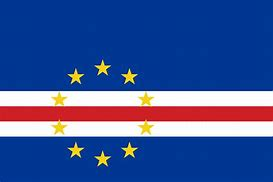

Bandeira
Informações gerais
Cabo Verde e suas informações históricas, politica e geograficas.
Cabo Verde é um país localizado no litoral do continente africano. Essa antiga colônia portuguesa adquiriu tardiamente a sua independência. O território cabo-verdiano é marcado pelo clima tropical seco. O arquipélago que forma o país é composto por cerca de dez ilhas.
A população de Cabo Verde é um pouco superior a meio milhão de habitantes. A economia de Cabo Verde é muito dependente dos setores primário e terciário. Atualmente, o turismo vem apresentando forte crescimento em Cabo Verde, especialmente por causa de suas praias. Em razão da influência europeia e africana, a cultura de Cabo Verde possui muitas semelhanças com a do Brasil, como os festejos carnavalescos.
Veja os tópicos abaixo:
- História
- Geografia
- Cultura
- Economia
- Sistema politico
- Relações internacionais
Para acessar as informações dos tópicos, veja o navegador